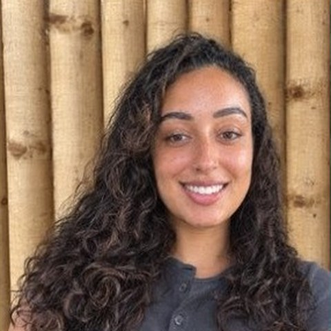
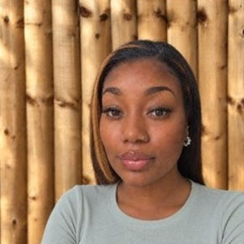

About us
A small school with big ambitions
Who we are, what we believe, and the building that became our school.
A welcome from our Headteacher
Meeting every young person exactly where they are
Welcome to Futures Matter - Northwood. It is a genuine privilege to introduce myself as the founding Headteacher of this exciting new provision, opening in the heart of Birmingham for secondary age young people whose primary need is SEMH and ASC.
I bring 20 years of experience in SEMH and specialist education, including headship of a specialist therapeutic school supporting young people with complex needs, and leadership of trauma informed, relational practice across integrated education, care and clinical teams. I know how much difference the right environment can make for young people who have not always had education work for them. At Northwood, we are building something different: a school where every young person is met exactly where they are, regardless of prior attainment, and where we hold high challenge and high aspiration alongside a genuinely low threat, low barrier environment. These are not opposites, and in my experience, together they are what allows young people to truly engage.
Our staff team is trained in trauma informed, relational practice. That means we put a pupil's emotional needs first, not as an alternative to learning, but as the route back into it. When a young person feels safe, understood and valued, they are ready to re-engage with their education, often for the first time in years.
An ambitious and inspiring curriculum sits at the heart of everything we do. As a close knit staff team, we set no ceiling on what our young people can achieve. We believe that with the right support, our pupils can go on to lead successful, fulfilling lives, and we will not settle for less on their behalf.
We welcome visits to our provision, so that you can experience Northwood first hand. I look forward to meeting you and your child soon.
Benjamin Neasom
Founding Headteacher
A message from our Proprietor
Everyone's future matters
Choosing the right school for any child is a life changing decision, and we know how much rides on getting it right.
We know that parents and carers want a high standard of education for their child, delivered in an environment where they are happy, safe and well supported.
Futures Matter Education Ltd was set up by a group of highly experienced, like-minded professionals, well known for supporting children and young people with a range of needs. Our company name reflects what we firmly believe: that everyone's future matters.
We know that sourcing suitable education can be a huge challenge for parents, carers and local authorities. Sometimes the right provision is full, or does not yet exist. Our solution was to set up a new service to provide appropriate provision, so individuals can access relevant learning while being supported to attend or return to school.
Futures Matter - Northwood provides full-time, personalised programmes of learning which meet the individual needs, challenges and interests of learners. Our aim is to ensure great educational outcomes for all students, including gaining the skills, qualifications, determination and resilience to succeed in life beyond school.
Our staff team is highly experienced, suitably qualified and trained. We support our staff team's wellbeing, so they work effectively and remain passionate about making a difference.
Your decision to choose our school will be supported by us throughout your child's time at Futures Matter - Northwood. We will work closely with you, as parents, carers and local authorities, to help confirm your decision was the right one.
Carrie-Ann McGurk
Proprietor
Our ethos
Futures Matter
We believe that everyone has a personal best, and that we play a vital part in making that a reality. Our pupils are successful adults in the making, and we set no ceiling on what they can achieve.
Highest aspirations for every young person, whatever their starting point
Dignity for pupils, families and each other, always
Confidence and self-belief to keep going when things are hard
Looking after one another and our community
A small, specialist school
Futures Matter - Northwood is a DfE registered independent special school for up to 20 young people aged 11 to 16, most with social, emotional and mental health (SEMH) needs or autism. Classes are capped at five pupils, with a teacher or instructor and a teaching assistant in every class.
Low threat, high challenge
We hold high aspiration alongside a calm, low-threat, low-barrier setting, so pupils feel safe, understood and ready to learn. See how this shapes our learning.
British values
Democracy, the rule of law, individual liberty, and mutual respect and tolerance of those of different faiths and beliefs are taught explicitly and lived every day. Read our British values statement.
Our team
The people who make Northwood work
Our staff team is trained in trauma informed, relational practice. Classes are capped at five pupils, with a teacher or instructor and a teaching assistant in every class. All staff undergo comprehensive checks, including references and an Enhanced DBS check, and senior leaders involved in recruitment are trained in Safer Recruitment.
![Staffing structure chart. Mark O'Donnell, Chair of the School Governance Board, and Carrie-Ann McGurk, Proprietor and Deputy Designated Safeguarding Lead, sit above Benjamin Neasom, Founding Headteacher, Designated Safeguarding Lead and Designated Teacher for Looked After Children. Teaching and Learning: Simone Welch, Food Technology Instructor, Deputy DSL and trainee teacher; a Specialist English Teacher, currently onboarding; a Specialist Maths and Science Teacher, currently onboarding; Kiana Gibson-Sawyers, Teaching Assistant, first aider and trainee Thrive practitioner; Onais Shinwari, Teaching Assistant and first aider; a PE Instructor and Enrichment Lead, currently recruiting. School Operations: Ripa Begum, Administrator and first aider; Kirsty Chamberlain, Business and Finance Manager; Maintenance by an external contractor.](resources/images/staff/staffing-structure.jpg)
Our staffing structure shows key roles and how they connect. Safeguarding roles are shown in gold. You can find out who to speak to about a safeguarding concern on our Safeguarding page.
Meet some of our team
In their own words

Simone Welch
Food Technology Instructor
“I specialise in Food Technology, and I have always believed the kitchen is one of the best classrooms in the world: it is a place where confidence, creativity, and independence grows. I joined FME because working in an SEN provision means supporting young people in ways that truly matter. Helping our learners discover their strengths through fun, hands-on, meaningful learning is exactly why I am here.”

Kiana Gibson-Sawyers
Teaching Assistant
“My skill set spans many sectors including education, prison, probation, housing, and residential care. These roles strengthened my ability to understand individual needs, build trust, and create environments where people feel seen and have a safe environment to grow. I chose to work at FME because I am passionate about having a positive impact on young people: helping them build confidence, develop independence, and realise their potential. What makes this more exciting is the opportunity to be part of building something amazing from the ground up.”
Pupil voice
Pupils have a real say
Many of our pupils have felt unheard in the past. At Northwood, what pupils think and feel shapes how the school is run, and we check regularly that school is working for them.
Representing pupils
Our School Council
The School Council gives pupils a real voice in the school. As our school grows, pupils will experience a democratic selection process to choose their representatives from each class or year group.
Leading by example
Anti-Bullying Ambassadors
Pupils vote in Anti-Bullying Ambassadors, who take a leading role in our anti-bullying work, including Anti-Bullying Week each November, with assemblies, class activities and circle times.
Regular check-ins
Asked, and listened to
We gather pupils' views through regular surveys, conversations and check-ins with their key adult. Senior leaders look at what we hear and act on it.
Real influence
Shaping what we do
Pupils' views shape curriculum planning, annual reviews and transition reviews. Once the school is established, the School Council will also suggest changes, for example to a more personalised uniform.
Pupil leaders
Reading Champions
Reading Champions help to celebrate books and reading, by recommending favourites and mentoring their peers.
Children's rights
Working towards Rights Respecting Schools status
We are working towards Rights Respecting Schools status with UNICEF UK. This means putting children's rights at the heart of daily life, so that every pupil knows their rights and learns to respect the rights of others. Pupil voice sits at the centre of that journey.
Our building
Every building has a story, and ours is still being written
We wanted to share where it began.
Northwood Engineering, 1985 onwards
A place of industry, skill and endeavour
For generations, 122 Emily Street has been part of our family, originally home to Northwood Engineering Company (B'ham) Limited, a family-run British engineering business established in Birmingham in 1985. For nearly 40 years, this building was a place of industry, skill and endeavour: precision milling, drilling and turning, built on craftsmanship, accuracy and hard work. Those values have never left the building.

Keeping the history alive
A new chapter for the community
As the engineering chapter came to a close, our family was determined that 122 Emily Street should not simply be sold and its history forgotten. We wanted the building that had supported our family, employed local people and contributed to British industry for so many years to begin a new chapter, one which would continue to serve its community. Today, that chapter is Futures Matter - Northwood.
From workshop to classroom
Shaping young people's futures
Where the building once helped manufacture precision components, it is now a place for shaping something even more important: young people's futures. The machinery and workshops have given way to classrooms and learning spaces, but the underlying principles remain remarkably similar: patience, precision, perseverance, practical skills, pride in achievement, and the understanding that every individual has potential when given the right tools and support.
Roots in Birmingham
There is something particularly meaningful to us about keeping this building within the family and giving it a renewed purpose. Northwood has roots. It has history. It has been part of our family's story and Birmingham's working community for almost 40 years, and we are immensely proud that its next generation will be defined by education, opportunity and inclusion, particularly for young people who may not always have found their place within traditional education.
The purpose may have changed, but the ambition has not: to create, to develop, to take pride in what we do, and to build something that lasts. At Futures Matter - Northwood, we are proud of where we have come from, and even more excited about what will be built here next.
Rick Asthana
Co-Founder, Futures Matter - Northwood